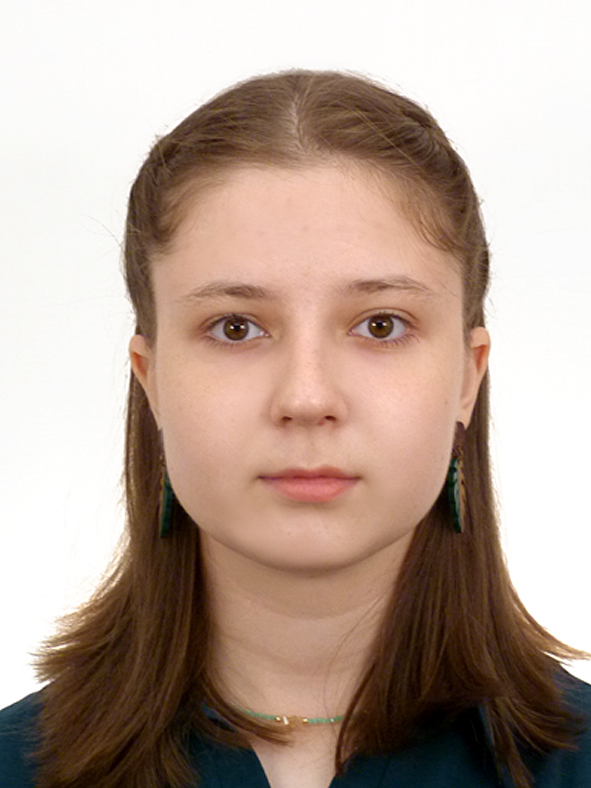

Место учебы
Фундаментальная и компьютерная лингвистика, НИУ ВШЭ, Москва
Life is pain au chocolat

Фундаментальная и компьютерная лингвистика, НИУ ВШЭ, Москва
Омск
Гимназия №19, Омск
Знаете, я никогда не думала, что мне придётся писать о себе больше одного абзаца,
поэтому перед сотворением этого текста пришлось пролистать половину пинтереста.
Помогло. Представление получилось в стиле Табаки из замечательной книги
"Дом, в котором..." Лучшее место, чтобы писать, – напротив окна.
Я не люблю истории. Я люблю мнговения. Люблю писать стихи, стоять на полу, который нагрело солнце,
выхватывать гениальные цитаты и пользоваться ими в жизни, ставить кучу будильников с разницей в пару минут,
есть доширак с крабовыми палочками, сочинять глупые каламбуры, ходить в кино и плакать над трогательными
сценами, ложиться в кровать после тяжелого дня, называть собак "шабаками", медитировать, слушать русские инди-песни
с переизбытком смысла, искать эти смыслы, играть в "Что?Где?Когда?", расписывать планы в заметках на телефоне,
смотреть гонки, проходить психологические тесты, волонтёрить, рисовать хной, собирать странные кубики Рубика,
писать длинные монологи в канале (и не только там, как вы могли заметить). Очень люблю людей. И киви
Нажав сюда, вы можете прочитать одно моё стихотворение
Я впервые сижу, провожая закат ветром морей.
Сквозь облака, позади городов ясно видна
Мечта, до свершенья которой 14 дней.
Я ворвусь в свою жизнь из плацкарта с душой друзей;
Мой пустой инструмент вновь напишет года перемен.
Потеряться в стремленье и снова казаться сильней –
Вот иллюзия, правду какой получу я взамен.
В этот яркий закат, обещая себе, что я буду любить
Каждый импульс движения нитей на бусах забот,
Я смотрю на мечты сквозь способность отчаянно жить,
Сквозь прозрачные волны морей в океане свобод.